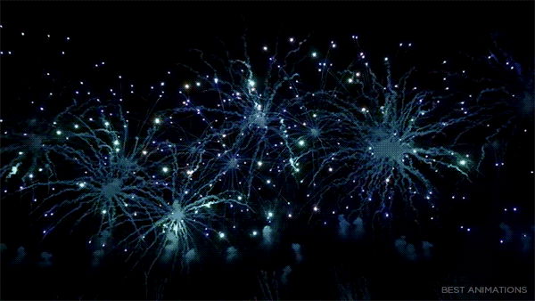
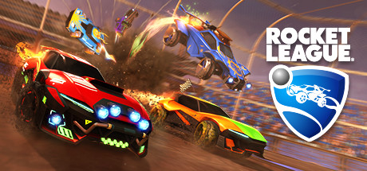

Top10 Game In Steam

TOP 1 Counter-Strike: Global OffensiveStore

CSGO Beginner's Manual: Introduction to the Game and Features Introduction to the Game:
"Counter-Strike: Global Offensive" is a first-person shooter developed by VALVE and HiddenPathEntertainment. It was officially released in Europe and America on August 21, 2012. It is the fourth work of the Counter-Strike series. Derivative works such as Neo and Online). [1] Game players are divided into two camps: "Counter Strike" and "Terrorist". Both sides need to fight multiple rounds on one map to achieve the goal of the map or destroy all the enemy to win.
Game features:
1.{Fair Athletics} All players are completely fair. As long as you purchase the game, you have all the weapons, no need to buy or unlock, skin, knife, just change the appearance, will not change the performance. 2.{Items Trading} The skin is not sold by the official, but by opening the box or falling inside the game. You can trade with the player in the official steam market and sell the skin you don't want. 3.{Position match} CSGO has an official server, and the classic competitive mode is also known as the “match” of the player, similar to the ladder race 4.{Global With the service} steam is a global platform, in the official service you can meet players in various countries. Of course, if you only want to play with the Chinese people, you can go to the community server, or the third-party battle platform 5.{Creative Workshop} In the creative workshop, you can freely and freely subscribe to a variety of interesting maps made by the players. 6.{Community Service Module} CSGO Open Server Module, you can play a variety of novel game modes in the community server, such as zombie escape, KZ, peekaboo, jailbreak, etc.
Top 2 Dota 2

Game description: As a sequel to the DOTA game, DOTA2 has passed the eighth year of life. Every day, millions of players around the world have turned into more than a hundred Dota heroes to fight. Whether it's just 10 hours or 1000 hours, the game always finds freshness. Regular updates ensure that gameplay, features and heroes continue to evolve, and Dota2 has truly revived.
Top 3 PLAYERUNKNOWN'S BATTLEGROUNDS

Game description: Jedi survival is a tactical competitive game. Each game will have 100 players participating. They will be placed on the ground of the grounds. When the game starts to skydiving, everyone has nothing. The way the game unfolds is: the players are scattered in all corners of the island with their bare hands, using the island's diverse weapons and props. As time went by, there were fewer and fewer safe areas on the island, and explosions occurred in certain areas. Only one person survived and won.
The game has multiple maps for players to choose from. Each game has 100 players participating. The player parachutes to all corners of the map, looking for weapons, vehicles and supplies with bare hands, and fighting in a variety of terrains. To win, strategy is just as important as shooting. During the game, there will be a blue circle expelling the player to a smaller place to exchange fire. This blue circle is commonly known as "Electrical Circle" or "Poison Circle" - the name "Poison Circle" comes from the narrow chlorine gas circle in the same type of game H1Z1. The developer said that this is some kind of release from a certain power transmitter. The electric field was originally used to suppress the resistance of the Orangel natives. Each game of the game will randomly convert the security zone, and the weapons and props obtained in each zone are randomly appearing.
Top 4 Destiny2


Destiny 2 is an online-only multiplayer first-person shooter video game developed by Bungie. It was released for PlayStation 4 and Xbox One on September 6, 2017, followed by a Microsoft Windows version the following month
The story of the game is about the command of the Kabbah Scarlet Army commander, the lord of the United States. The aggressor forces launched a storm and the human beings lost their last refuge. Gaio deprived the guardians of the city and forced them to embark on the road to escape. Players will have the opportunity to explore the mysterious and unknown world in the solar system and arm themselves with unbreakable weapons and new combat capabilities. In order to defeat the Scarlet Legion and challenge the Lord to cover the European Union, you need to gather the heroes of the four human beings, and join hands to regain our homeland.
Top 5 Tom Clancy's Rainbow Six SiegeStore


Game description: Rainbow No. 6: Siege is the latest work of the upcoming first-person shooter simulation series game of Ubisoft's Montreal studio. It is specially developed for the new generation of game consoles and consoles. It belongs to the "Rainbow Six" series. The inspiration comes from anti-terrorist actions in the real world.
"Rainbow Six: Siege" is a 5V5 first-person tactical shooting game. Players can choose different Secret Service personnel as roles. Each character has different equipment and can be equipped with different accessories on the gun. The personnel cannot make any configuration of the firearms and have no special skills and equipment.
The game is divided into attacker and defender. After the start of the round, the attacker can use the drone to explore the map and try to find the location of the defender. The defender will destroy the drone, block the door frame or window with wood, and strengthen the wall. Face to avoid the wall being destroyed by the attacker to invade the target, the defender can also use the monitor to find the enemy position.
The goal of the game is that the attacker must reach the target and reach the condition, and the defender must prevent the attacker from reaching the victory condition. In addition to destroying the wall, the attacker can also carry out the rope on the outside of the building. These destructible surfaces can also be used by the defending party to attack and exploit. The weapon in the game can hurt the teammate, and the character can't be revived until the next turn after the character dies.
There are four ways to end the game:
The attacker wins after reaching the condition
The defender successfully holds the stronghold and wins after the end of the time.
One of the teams annihilated the enemy team and won
The last remaining teammates of the two teams just fell off after the death.
The destruction system of the game is a major feature. The surface of the game's fragile materials (such as wood, glass, etc.) can be destroyed, including walls, ceilings and floors. These materials can be destroyed by gunshots or melee attacks in addition to explosives. If the wall is reinforced, special explosives are required to break.
Top 6 Team Fortress2


Game description: "Fortress Fortress 2" is an FPS online game developed by ValveCorporation, officially released on October 9, 2007. There are nine different professions and abilities in the game. Each profession has its own advantages and disadvantages, and has a variety of unique weapons. Since its release, the game has won the 2007 Best of the Year Awards by many important game media such as IGN, GameSpy, and GamePro.
Legion Fortress 2, like CS, is a team-based online battle game where players can play online with other players around the world. Unlike CS, there are up to nine exaggerated and professional characters in TF2 that can be selected and presented with cartoon renderings, which is quite interesting!
Because TF2's cartoon style and exciting competition are very addictive, its popularity in foreign countries is absolutely beyond your imagination. If you like to play FPS online, then there is no reason to refuse TF2 after free?
Top 7 Rust

Rust is a multiplayer-only survival video game developed and published by Facepunch Studios in February 2018 for Microsoft Windows, macOS and Linux. Rust was initially created as a clone of DayZ, a popular mod for ARMA 2, with crafting elements akin to those in Minecraft.
The only goal in the game Corrosion is to survive.
To do this, you need to overcome struggles like hunger, thirst and cold. Fire. Build a shelter. Kill the animals and take the meat. Protect yourself from other players and kill them. Establish alliances with other players to form towns.
Do everything possible to survive.
Top 8 Rocket League


Compared with traditional football games, the Rockets League is unique. It is a bright spot to watch football games by operating vehicles. The physics engine of the game itself is great, and the driving and touch skills are also very researched, plus a variety of venues (including ice hockey, basketball) and a variety of vehicles, is a game worth buying. Yes, it’s very fun to be black with friends!
A big difference is that traditional football games are played by people. RL is a non-nonsense game. Because the car is the main body of control, the influence of inertia and turning radius is very large, and the action is divided into forward/reverse. A few points have caused huge manipulation differences. Imagine if the player needs to slow down when playing FIFA, and then draw a semi-circle with a radius of 3 meters on the field to return to the defense, fearing that people will drop the handle XD. In general, it is a bit like the difference between playing traditional TPS and the world of tanks. On the other hand, the ball of the traditional football game and the player itself are sticky, and there is no need to worry about how to take the ball out of a straight line, and RL has no such advantage at all. The movement of the ball depends entirely on your last contact. How much force is applied to it from what angle. Coupled with the aforementioned differences in mobility control, it is enough to take some time to adapt.
Top 9 Grand Theft Auto V


Grand Theft Auto V is an action-adventure video game developed by Rockstar North and published by Rockstar Games. It was released in September 2013 for PlayStation 3 and Xbox 360, in November 2014 for PlayStation 4 and Xbox One, and in April 2015 for Microsoft Windows.
"Grand Theft Auto 5" is an open video game around the crime-themed magazine developed by Rockstar Games. There are three protagonists in the single-player mode. Players can switch between the three. Control. The story takes place in Los Angeles, a city based in Los Angeles and its surrounding areas, based on the reality of Los Angeles and Southern California.
The producers took more than 250,000 related photos and studied demographic data and car sales data to build the world in the game. "Grand Theft Auto 5" uses the new Thunder Engine (RAGE engine), which was launched on the PlayStation 3 and Xbox 360 platforms on September 17, 2013. The PC version was released on April 14, 2015. "Grand Theft Auto 5" reached 800 million sales on the first day after its launch, broke through 1 billion$ in three days, and sold more than 29 million copies in the first six weeks, setting the fastest sales record and entertainment for video games. Product revenue record
Top 10 Football Manager 2019


Football Manager 2019 is a football management simulation video game developed by Sports Interactive and published by Sega which was released worldwide in November 2018 for Microsoft Windows, macOS and Nintendo Switch.
"Football Manager" is a business game produced by the European game manufacturer SENSIBLE. In the game, the player plays the role of a club manager, manages a team and leads the team against various competitions. Buy and sell players, build a luxury lineup, arrange a winning tactical strategy, arrange player-specific training, and win in the game. Providing the player with the realistic sense of real football, through the sophisticated game engine unique to the "Soccer Manager" developed over the past 27 years, players can more accurately view the player's data and choose a variety of tactics and instructions. Compared with the stand-alone version, the OL version has added team equipment, PVP leagues, and world conferences and strong team challenge modes. The interaction between players has also been enhanced. In the past, people only played against computers. Now players can work with FM enthusiasts around the world. It is very tempting to play the team who is the best.